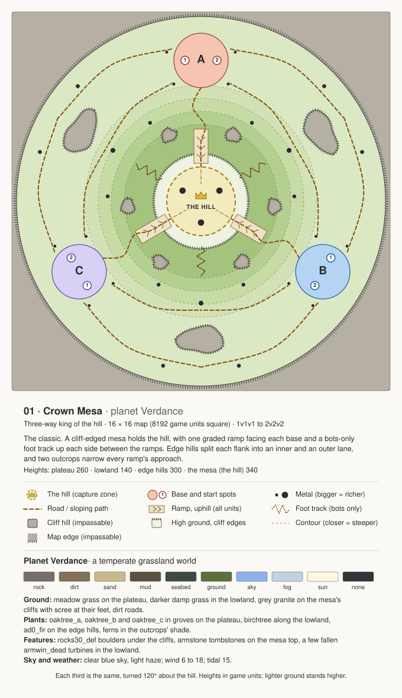
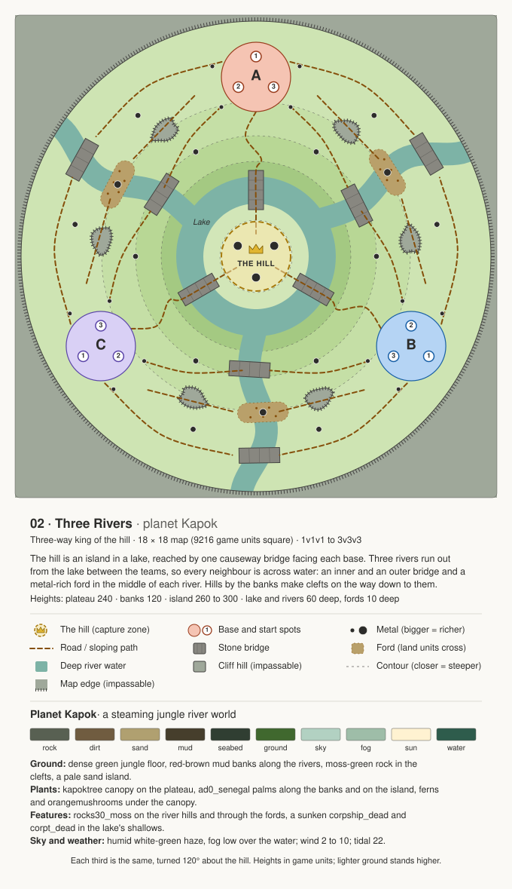
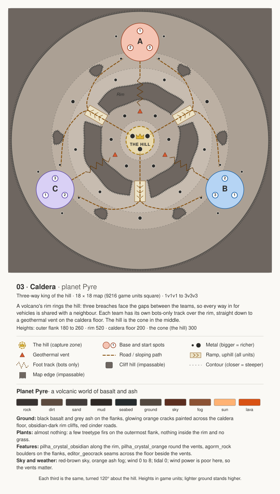
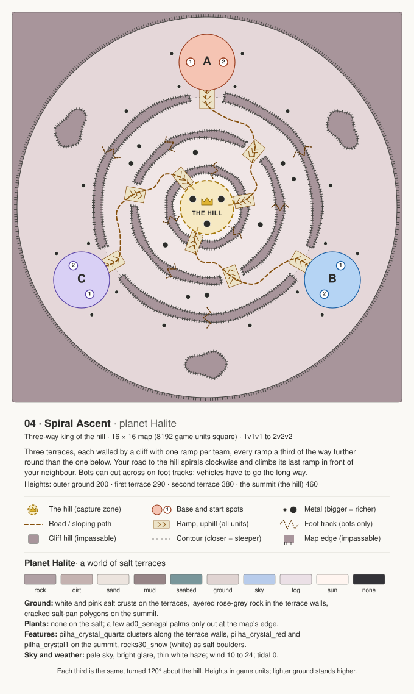
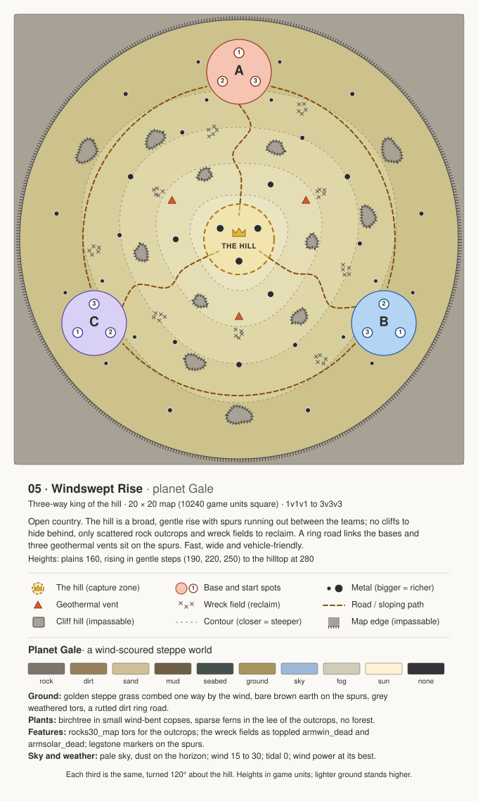
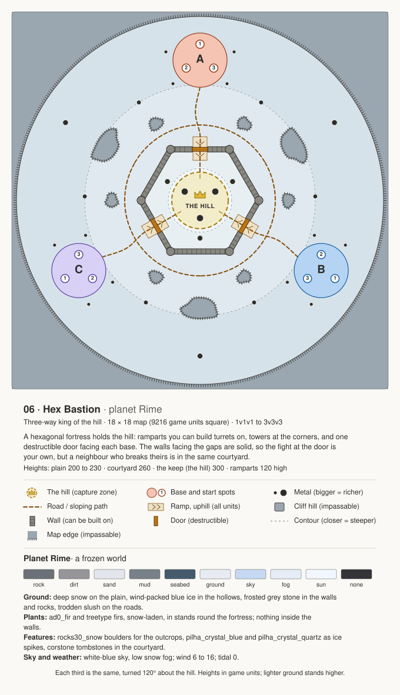
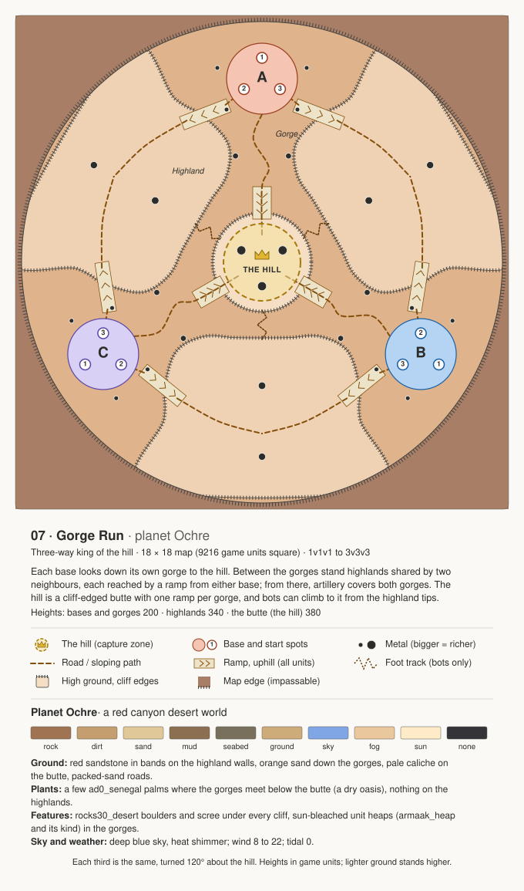
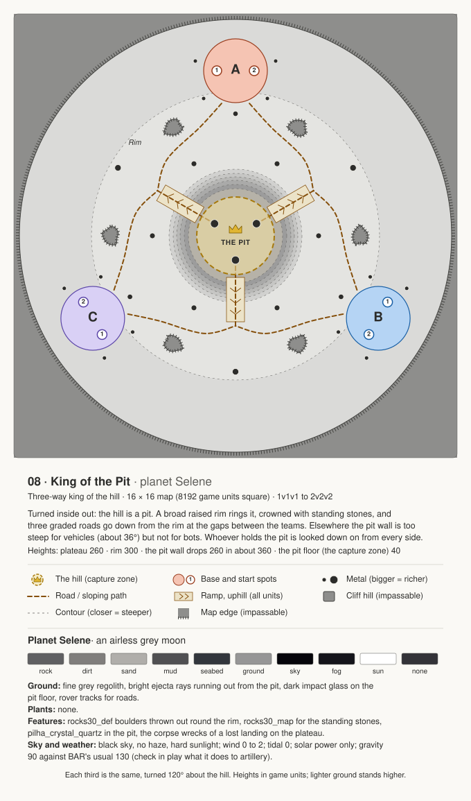
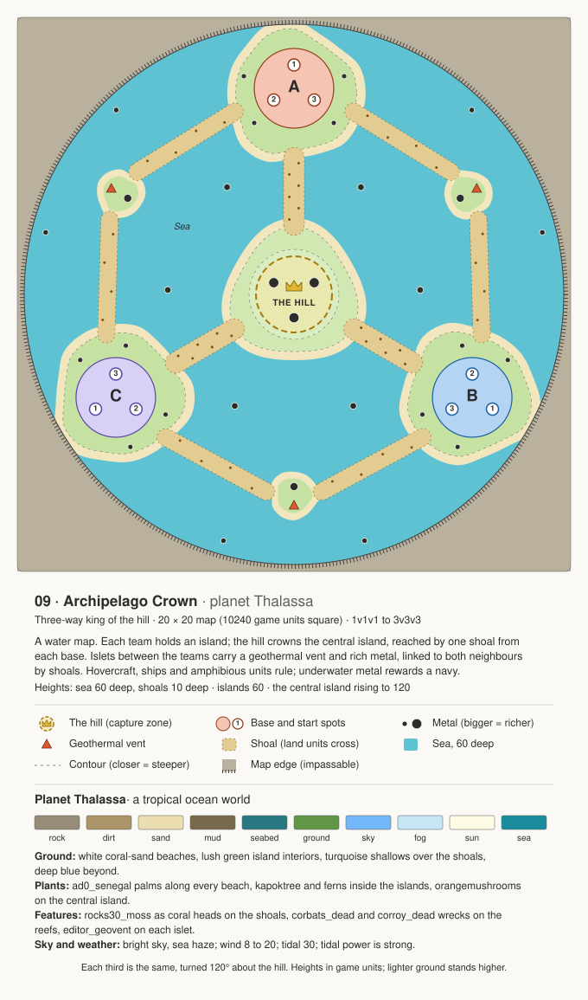
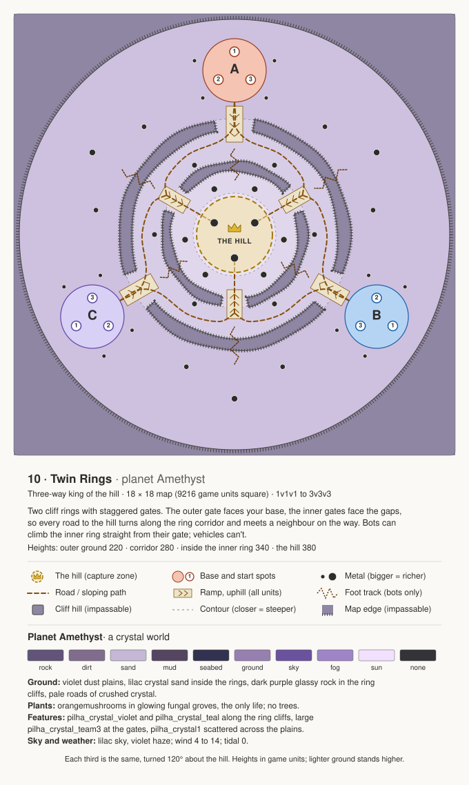

The classic. A cliff-edged mesa holds the hill, with one graded ramp facing each base and a bots-only foot track up each side between the ramps. Edge hills split each flank into an inner and an outer lane, and two outcrops narrow every ramp's approach.
Textures, plants and features
Ground: meadow grass on the plateau, darker damp grass in the lowland, grey granite on the mesa's cliffs with scree at their feet, dirt roads.
Plants: oaktree_a, oaktree_b and oaktree_c in groves on the plateau, birchtree along the lowland, ad0_fir on the edge hills, ferns in the outcrops' shade.
Features: rocks30_def boulders under the cliffs, armstone tombstones on the mesa top, a few fallen armwin_dead turbines in the lowland.
Sky and weather: clear blue sky, light haze; wind 6 to 18; tidal 15.
MapTool:
beautify-texture:rock=118,112,104;dirt=132,112,86;sand=200,184,140;mud=92,80,64;seabed=60,74,70;ground=92,112,58 set:atmosphere.skyColor=0.55,0.7,0.92 set:atmosphere.fogColor=0.76,0.82,0.88 set:atmosphere.sunColor=1,0.97,0.88 set:atmosphere.minWind=6 set:atmosphere.maxWind=18 set:tidalStrength=15
The hill is an island in a lake, reached by one causeway bridge facing each base. Three rivers run out from the lake between the teams, so every neighbour is across water: an inner and an outer bridge and a metal-rich ford in the middle of each river. Hills by the banks make clefts on the way down to them.
Textures, plants and features
Ground: dense green jungle floor, red-brown mud banks along the rivers, moss-green rock in the clefts, a pale sand island.
Plants: kapoktree canopy on the plateau, ad0_senegal palms along the banks and on the island, ferns and orangemushrooms under the canopy.
Features: rocks30_moss on the river hills and through the fords, a sunken corpship_dead and corpt_dead in the lake's shallows.
Sky and weather: humid white-green haze, fog low over the water; wind 2 to 10; tidal 22.
MapTool:
beautify-texture:rock=88,96,82;dirt=112,92,64;sand=176,160,112;mud=70,62,44;seabed=48,62,50;ground=64,104,46 set:atmosphere.skyColor=0.7,0.82,0.76 set:atmosphere.fogColor=0.62,0.74,0.66 set:atmosphere.sunColor=1,0.95,0.82 set:atmosphere.minWind=2 set:atmosphere.maxWind=10 set:tidalStrength=22 set:water.surfaceColor=0.59,0.68,0.65 set:water.planeColor=0.18,0.36,0.3
A volcano's rim rings the hill: three breaches face the gaps between the teams, so every way in for vehicles is shared with a neighbour. Each team has its own bots-only track over the rim, straight down to a geothermal vent on the caldera floor. The hill is the cone in the middle.
Textures, plants and features
Ground: black basalt and grey ash on the flanks, glowing orange cracks painted across the caldera floor, obsidian-dark rim cliffs, red cinder roads.
Plants: almost nothing: a few treetype firs on the outermost flank, nothing inside the rim and no grass.
Features: pilha_crystal_obsidian along the rim, pilha_crystal_orange round the vents, agorm_rock boulders on the flanks, editor_geocrack seams across the floor beside the vents.
Sky and weather: red-brown sky, orange ash fog; wind 0 to 8; tidal 0; wind power is poor here, so the vents matter.
MapTool:
beautify-texture:rock=56,50,48;dirt=92,74,62;sand=66,60,58;mud=46,40,36;seabed=38,44,46;ground=82,72,62 set:atmosphere.skyColor=0.36,0.18,0.12 set:atmosphere.fogColor=0.55,0.32,0.2 set:atmosphere.sunColor=1,0.7,0.45 set:atmosphere.minWind=0 set:atmosphere.maxWind=8 set:tidalStrength=0
Three terraces, each walled by a cliff with one ramp per team, every ramp a third of the way further round than the one below. Your road to the hill spirals clockwise and climbs its last ramp in front of your neighbour. Bots can cut across on foot tracks; vehicles have to go the long way.
Textures, plants and features
Ground: white and pink salt crusts on the terraces, layered rose-grey rock in the terrace walls, cracked salt-pan polygons on the summit.
Plants: none on the salt; a few ad0_senegal palms only out at the map's edge.
Features: pilha_crystal_quartz clusters along the terrace walls, pilha_crystal_red and pilha_crystal1 on the summit, rocks30_snow (white) as salt boulders.
Sky and weather: pale sky, bright glare, thin white haze; wind 10 to 24; tidal 0.
MapTool:
beautify-texture:rock=176,160,164;dirt=196,178,176;sand=236,228,222;mud=150,132,134;seabed=120,150,154;ground=224,212,210 set:atmosphere.skyColor=0.72,0.8,0.92 set:atmosphere.fogColor=0.92,0.88,0.9 set:atmosphere.sunColor=1,0.96,0.94 set:atmosphere.minWind=10 set:atmosphere.maxWind=24 set:tidalStrength=0
Open country. The hill is a broad, gentle rise with spurs running out between the teams; no cliffs to hide behind, only scattered rock outcrops and wreck fields to reclaim. A ring road links the bases and three geothermal vents sit on the spurs. Fast, wide and vehicle-friendly.
Textures, plants and features
Ground: golden steppe grass combed one way by the wind, bare brown earth on the spurs, grey weathered tors, a rutted dirt ring road.
Plants: birchtree in small wind-bent copses, sparse ferns in the lee of the outcrops, no forest.
Features: rocks30_map tors for the outcrops; the wreck fields as toppled armwin_dead and armsolar_dead; legstone markers on the spurs.
Sky and weather: pale sky, dust on the horizon; wind 15 to 30; tidal 0; wind power at its best.
MapTool:
beautify-texture:rock=124,118,106;dirt=150,128,92;sand=206,192,150;mud=110,96,70;seabed=70,80,76;ground=166,150,94 set:atmosphere.skyColor=0.62,0.72,0.84 set:atmosphere.fogColor=0.82,0.8,0.72 set:atmosphere.sunColor=1,0.95,0.84 set:atmosphere.minWind=15 set:atmosphere.maxWind=30 set:tidalStrength=0
A hexagonal fortress holds the hill: ramparts you can build turrets on, towers at the corners, and one destructible door facing each base. The walls facing the gaps are solid, so the fight at the door is your own, but a neighbour who breaks theirs is in the same courtyard.
Textures, plants and features
Ground: deep snow on the plain, wind-packed blue ice in the hollows, frosted grey stone in the walls and rocks, trodden slush on the roads.
Plants: ad0_fir and treetype firs, snow-laden, in stands round the fortress; nothing inside the walls.
Features: rocks30_snow boulders for the outcrops, pilha_crystal_blue and pilha_crystal_quartz as ice spikes, corstone tombstones in the courtyard.
Sky and weather: white-blue sky, low snow fog; wind 6 to 16; tidal 0.
MapTool:
beautify-texture:rock=108,112,120;dirt=150,150,154;sand=226,230,236;mud=120,128,136;seabed=70,90,110;ground=232,236,242 set:atmosphere.skyColor=0.78,0.85,0.95 set:atmosphere.fogColor=0.9,0.93,0.97 set:atmosphere.sunColor=0.95,0.97,1 set:atmosphere.minWind=6 set:atmosphere.maxWind=16 set:tidalStrength=0
Each base looks down its own gorge to the hill. Between the gorges stand highlands shared by two neighbours, each reached by a ramp from either base; from there, artillery covers both gorges. The hill is a cliff-edged butte with one ramp per gorge, and bots can climb to it from the highland tips.
Textures, plants and features
Ground: red sandstone in bands on the highland walls, orange sand down the gorges, pale caliche on the butte, packed-sand roads.
Plants: a few ad0_senegal palms where the gorges meet below the butte (a dry oasis), nothing on the highlands.
Features: rocks30_desert boulders and scree under every cliff, sun-bleached unit heaps (armaak_heap and its kind) in the gorges.
Sky and weather: deep blue sky, heat shimmer; wind 8 to 22; tidal 0.
MapTool:
beautify-texture:rock=160,116,82;dirt=196,158,110;sand=224,200,152;mud=140,110,80;seabed=120,112,92;ground=206,172,122 set:atmosphere.skyColor=0.5,0.65,0.9 set:atmosphere.fogColor=0.92,0.78,0.62 set:atmosphere.sunColor=1,0.92,0.78 set:atmosphere.minWind=8 set:atmosphere.maxWind=22 set:tidalStrength=0
Turned inside out: the hill is a pit. A broad raised rim rings it, crowned with standing stones, and three graded roads go down from the rim at the gaps between the teams. Elsewhere the pit wall is too steep for vehicles (about 36°) but not for bots. Whoever holds the pit is looked down on from every side.
Textures, plants and features
Ground: fine grey regolith, bright ejecta rays running out from the pit, dark impact glass on the pit floor, rover tracks for roads.
Plants: none.
Features: rocks30_def boulders thrown out round the rim, rocks30_map for the standing stones, pilha_crystal_quartz in the pit, the corpse wrecks of a lost landing on the plateau.
Sky and weather: black sky, no haze, hard sunlight; wind 0 to 2; tidal 0; solar power only; gravity 90 against BAR's usual 130 (check in play what it does to artillery).
MapTool:
beautify-texture:rock=96,96,98;dirt=128,126,124;sand=176,174,170;mud=80,80,82;seabed=50,54,60;ground=150,150,150 set:atmosphere.skyColor=0.02,0.02,0.04 set:atmosphere.fogColor=0.08,0.08,0.1 set:atmosphere.sunColor=1,1,1 set:atmosphere.minWind=0 set:atmosphere.maxWind=2 set:tidalStrength=0 set:gravity=90
A water map. Each team holds an island; the hill crowns the central island, reached by one shoal from each base. Islets between the teams carry a geothermal vent and rich metal, linked to both neighbours by shoals. Hovercraft, ships and amphibious units rule; underwater metal rewards a navy.
Textures, plants and features
Ground: white coral-sand beaches, lush green island interiors, turquoise shallows over the shoals, deep blue beyond.
Plants: ad0_senegal palms along every beach, kapoktree and ferns inside the islands, orangemushrooms on the central island.
Features: rocks30_moss as coral heads on the shoals, corbats_dead and corroy_dead wrecks on the reefs, editor_geovent on each islet.
Sky and weather: bright sky, sea haze; wind 8 to 20; tidal 30; tidal power is strong.
MapTool:
beautify-texture:rock=150,140,120;dirt=170,148,104;sand=236,222,176;mud=120,104,76;seabed=40,120,130;ground=96,150,70 set:atmosphere.skyColor=0.45,0.72,0.98 set:atmosphere.fogColor=0.78,0.9,0.96 set:atmosphere.sunColor=1,0.98,0.9 set:atmosphere.minWind=8 set:atmosphere.maxWind=20 set:tidalStrength=30 set:water.surfaceColor=0.55,0.78,0.81 set:water.planeColor=0.1,0.55,0.62
Two cliff rings with staggered gates. The outer gate faces your base, the inner gates face the gaps, so every road to the hill turns along the ring corridor and meets a neighbour on the way. Bots can climb the inner ring straight from their gate; vehicles can't.
Textures, plants and features
Ground: violet dust plains, lilac crystal sand inside the rings, dark purple glassy rock in the ring cliffs, pale roads of crushed crystal.
Plants: orangemushrooms in glowing fungal groves, the only life; no trees.
Features: pilha_crystal_violet and pilha_crystal_teal along the ring cliffs, large pilha_crystal_team3 at the gates, pilha_crystal1 scattered across the plains.
Sky and weather: lilac sky, violet haze; wind 4 to 14; tidal 0.
MapTool:
beautify-texture:rock=98,84,120;dirt=128,108,140;sand=196,184,214;mud=84,70,96;seabed=50,50,80;ground=150,128,176 set:atmosphere.skyColor=0.42,0.32,0.62 set:atmosphere.fogColor=0.62,0.52,0.78 set:atmosphere.sunColor=0.95,0.88,1 set:atmosphere.minWind=4 set:atmosphere.maxWind=14 set:tidalStrength=0